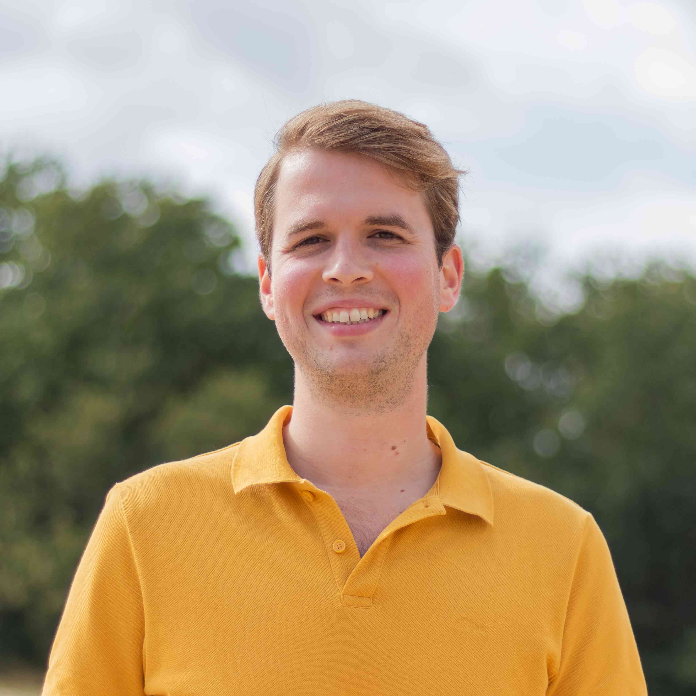

Events
Subscribe to our mailing list here.
Democratizing AI through Controlled Narrative Generation and Knowledge Grounding
Speaker:
Shubhra Kanti KarmakerAssistant Professor, Auburn University (Alabama, U.S.)
Abstract:
Even though Artificial Intelligence (AI) has existed for a long time, its broad accessibility is a recent development, thanks to Generative AI models like ChatGPT for its human-like interactions. While such broad accessibility provides a great opportunity to democratize AI across general people, it comes with several key risks and challenges, including but not limited to a lack of Knowledge Grounding/Contextual Understanding in unseen/new domains, an abundance of Biased Contents/Narratives, and a lack of Utility-Centric Evaluation of Generative AI systems. This talk will focus on two specific challenges related to the democratization of AI, i.e., 1) Controlled Narrative Generation and 2) Knowledge Grounding in Conversational-AI systems, and discuss practical solutions and appropriate evaluation approaches for them. The talk will also introduce several utility-centric evaluation metrics for measuring the quality of Generative and Conversational AI systems that correlate with human judgments better than traditional metrics. Finally, the talk will highlight some interesting future directions in line with the democratization of AI and its associated challenges.
Bio:
'Dr. Shubhra Kanti Karmaker (``Santu') (Co-PI) is an Assistant Professor in the Department of Computer Science and Software Engineering at Auburn University, Alabama. With a broad interest in the academic field of Artificial Intelligence and Data Science, his primary research focus lies at the intersection of Natural Language Processing (NLP) and Information Retrieval (IR). More specifically, his research is primarily driven by the following broad research question: “How can we make AI/Data Science more accessible and useful to the end users in order to democratize AI to a broader audience?” ' → WebsiteCurrent NLG research at GPLSI group
Speaker:
Elena Lloret Pastor,professor, Universitat d'Alacant
Abstract:
The main aim of this talk is to look for potential synergies between MaiNLP and GPLSI research groups. Therefore, in this talk, I will present the research carried out in the GPLSI Research Group of the University of Alicante (Spain) concerning Natural Language Generation (NLG). I will first provide a brief introductory information about my background and my research group. Then, I will introduce two relevant current projects that deals with NLG as their main topic: 1) CORTEX - Concious Text Generation, and 2) ILENIA project, describing the most recent research that has been developed within them, together with work in progress and future steps. Finally, I will outline some possible activities to do during my visit.
Bio:
PhD in Computer Applications, June 2011. Currently, Elena is a member of the Natural Language Processing research group at the University of Alicante. Her research interests focus on Natural Language Processing, and in particular on Text Summarization, Natural Language Generation, and Text Simplification. → WebsiteAnnotators Aren't Asocial Atoms: Modeling Individual Perspectives and Social Groups
Speaker:
Matthias OrlikowskiPhD candidate, Bielefeld University (Germany)
Abstract:
Annotators, like we all, are shaped to some extent by their membership in social groups. Some groups are formed based on socially-relevant categories, like age or gender, others can be more local and temporary. For example, the group of all annotators in the annotation process is just that, a group. If groups have an impact on us, can we include them in our models to better capture variation in annotation? I will present results from two recent works to provide some tentative answers to this question. In one case we find that groups based on sociodemographics might be too coarse to be informative [1]. In the other we see that it is beneficial to model the annotators of a dataset as a group and in relation to one another [2].[1] https://aclanthology.org/2023.acl-short.88/
[2] https://aclanthology.org/2023.emnlp-main.687/

Bio:
Matthias Orlikowski is a PhD student in the Semantic Computing Group at Bielefeld University (Germany) supervised by Philipp Cimiano. He works on systems to analyse online discussions with a particular focus on subjectivity and human label variation. In 2022 and 2023 he visited Dirk Hovy's MilaNLP Lab at Bocconi University (Italy) to work on related problems in modeling sociodemographics and continues to collaborate with the group. → WebsiteBridging Knowledge Gaps: Harnessing Embedding Techniques for Knowledge Graph Completion
Speaker:
Russa BiwasPostdoc, Hasso-Plattner Institute, Potsdam (Germany)
Abstract:
Knowledge Graphs (KGs) are the most widely used representation of structured information about a particular domain consisting of billions of facts in the form of entities (nodes), and relations (edges) between them and encapsulate the semantic type information of the entities. Open KGs such as DBpedia, Wikidata, and YAGO, are multilingual and are heuristically created, automatically generated or human-curated. Over the past two decades, KGs have grown in various domains such as government, scholarly data, and biomedical fields and have been used in Machine Learning applications namely entity linking, question answering, and recommender systems. However, these KGs are often incomplete i.e., there are missing links between entities. The talk begins by elucidating the significance of KG completion in enhancing comprehensiveness. It highlights the role of ML algorithms in leveraging the existing structure and semantics encoded within KGs to predict and infer missing links, thereby enriching the knowledge representation. However, existing research has focused mostly on monolingual KGs, leaving multilingual KGs unexplored. This talk also discusses the open challenges and research gaps in multilingual KG completion.
Bio:
Russa Biswas is a postdoctoral researcher at Hasso Plattner Institute, Potsdam, working on the intersection of Knowledge Graphs and Large Language Models. She earned her PhD from Karlsruhe Institute of Technology, AIFB, Germany and was also part of the Information Service Engineering group at FIZ Karlsruhe. Prior to that, she worked as a research associate at DFKI, Saarbrücken, and at the Computational Linguistics group at Saarland University and as a research assistant at Fraunhofer IZFP, Saarbrücken. She did her masters in Computer Science from Saarland University. Her research focuses on multilingual KGs, factuality in LLMs, and ML in Graphs. → WebsiteTowards well-rounded sarcasm handling by language models
Speaker:
Hyewon JangPhD candidate, University of Konstanz (Germany)
Abstract:
We investigate the ways of reaching well-rounded handling of sarcasm by language models (LMs), exemplified by the ability to generalize well, to understand the reasoning behind the use of sarcasm, or to generate sarcasm at an appropriate time. As the first attempt, we tested the robustness of sarcasm detection models by examining their behavior when fine-tuned on four sarcasm datasets containing varying characteristics of sarcasm: label source (authors vs. third-party), domain (social media/online vs. offline conversations/dialogues), style (aggressive vs. humorous mocking). We found that most LMs failed to generalize well to the other datasets, implying that one type of dataset cannot represent all sorts of sarcasm with different styles and domains. Compared to the existing datasets, LMs fine-tuned on the new dataset we newly released showed the highest generalizability to other datasets. From analyzing these results, we show that sarcasm encompasses a broad spectrum of characteristics, intricately intertwined with factors requiring inference and pragmatics, and argue that future research of sarcasm should take these factors into account. We conclude by discussing future work in this direction.
Bio:
Hyewon Jang is a PhD candidate in computational psycholinguistics at the University of Konstanz supervised by Diego Frassinelli and Bettina Braun. Hyewon uses experimental and computational linguistics methods to investigate the pragmatic dimensions of language that make human language complex and fun, with sarcasm being the current topic of interest. → WebsiteROBustness in NLP over the years
Speaker:
Rob van der GootAssistant Professor at the IT University of Copenhagen
Abstract:
This talk will consist of three parts 1. Lexical normalization of social media data and its downstream effect on syntactic tasks. 2. Multi-task learning for adaptation in challenging setups. 3. What are open challenges for fundamental NLP tasks like language identification and word segmentation?

Bio:
Rob van der Goot's main interest is in low-resource setups in natural language processing, which could be in a variety of dimensions, including language(-variety), domain, or task. He did his PhD on the use of normalization for syntactic parsing of social media data, one specific case of a challenging transfer setup. Afterwards, he focused on using multi-task learning in challenging settings. Most recently, Rob focuses on more low-level tasks (language identification, tokenization) in challenging settings (cross-lingual, cross-domain, for low-resource languages/scripts). → WebsiteRepresenting Low-Resource Language Varieties: Improved Methods for Spoken Language Processing
Speaker:
Martijn BarteldsIncoming PostDoc at Stanford University
Abstract:
Languages are often treated as homogeneous entities, while they are typically composed of multiple varieties. Most language varieties do not correspond to administrative boundaries, such as provinces or states within nations, and they often form a continuum with neighboring varieties. Studying language variation can provide valuable insights into how language varieties relate to their linguistic communities. To this end, it is important to focus on spoken language, as many languages do not have a standard written system.In this talk, I will introduce our new method to describe and model language variation, which leverages speech representations from self-supervised neural network models to quantify differences between the pronunciations of speakers from different language varieties. This new method assesses the differences between language varieties more accurately and efficiently compared to previously-used methods. Additionally, I will talk about the use of these neural network models to develop speech technology systems that can help empower low-resource language varieties. In particular, I will present our audio-based search algorithm to automatically identify occurrences of a spoken search term in a large collection of spoken materials, improving access to resources that would normally require manual annotation. Furthermore, I will discuss an approach to improve speech recognition performance for several language varieties from different language families. This technology can be a promising step towards the important goal of developing speech technology that is inclusive of the world’s languages.

Bio:
Martijn is an incoming Postdoctoral Scholar in Computer Science at Stanford University, working with Professor Dan Jurafsky. His research focuses on developing and applying natural language processing methods to describe and model resource-scarce languages. He is particularly interested in speech processing with extremely low-resource languages, dialects, and non-native speech. Martijn was awarded his PhD at the University of Groningen (cum laude), where he was advised by Professor Martijn Wieling and Professor Mark Liberman. → WebsiteWe are Who We Cite: Bridges of Influence Between Natural Language Processing and Other Academic Fields
Speaker:
Jan Philip Whale1, Saif M. Mohammad21PhD candidate, University of Göttingen
2Senior Research Scientist, National Research Council Canada
Abstract:
Natural Language Processing (NLP) is poised to substantially influence the world. However, significant progress comes hand-in-hand with substantial risks. Addressing them requires broad engagement with various fields of study. Yet, little empirical work examines the state of such engagement (past or current). In this paper, we quantify the degree of influence between 23 fields of study and NLP (on each other). We analyzed ~77k NLP papers, ~3.1m citations from NLP papers to other papers, and ~1.8m citations from other papers to NLP papers. We show that, unlike most fields, the cross-field engagement of NLP, measured by our proposed Citation Field Diversity Index (CFDI), has declined from 0.58 in 1980 to 0.31 in 2022 (an all-time low). In addition, we find that NLP has grown more insular -- citing increasingly more NLP papers and having fewer papers that act as bridges between fields. NLP citations are dominated by computer science; Less than 8% of NLP citations are to linguistics, and less than 3% are to math and psychology. These findings underscore NLP's urgent need to reflect on its engagement with various fields.
Bio:
Jan Philip Wahle is a PhD candidate in computer science at the University of Göttingen in Germany. His primary research revolves around paraphrasing, plagiarism detection, and responsible NLP, as well as their various applications such as summarization or misinformation detection. The work presented during this talk was performed during a research visit at the National Research Council Canada. Now, Jan is a visiting researcher at the University of Toronto. Updates about his research can be followed on his website, X, and LinkedIn. → Website | X | LinkedInLLM Safety: What does it mean and how do we get there?
Speaker:
Paul RöttgerPostDoc in MilaNLP Lab at Bocconi University
Abstract:
AI safety, and specifically the safety of large language models (LLMs) like ChatGPT, is receiving unprecedented public and regulatory attention. In my talk, split into two parts, I will try to give some more concrete meaning to this often nebulous topic and the challenges it poses. First, I will define LLM safety with a focus on near-term risks and explain why LLM safety matters, countering common arguments against this line of work. I will also give an overview of current methods for ensuring LLM safety, from red-teaming to fine-grained feedback learning. Second, I will zoom in on imitation learning, where models are trained on outputs from other models, as a particularly common way of improving the capabilities of open LLMs. I will talk about our own work in progress on safety by imitation, where we extend imitation learning to safety-related behaviours. I will present the resources we have built already, and then transition into an open discussion about our hypotheses and planned experiments, followed by a Q&A to close out the hour.
Bio:
Paul is a postdoctoral researcher in Dirk Hovy‘s MilaNLP Lab at Bocconi University. His work is located at the intersection of computation, language and society. Right now, he is particularly interested in evaluating and aligning social values in large generative language models, and, by extension, in AI safety. Before coming to Milan, he completed his PhD at the University of Oxford, where he worked on improving the evaluation and effectiveness of large language models for hate speech detection. → WebsiteThe Pivotal Role of Genres: Insights from English RST Parsing and Abstractive Summarization
Speaker:
Janet LiuPhD candidate, Georgetown University
Abstract:
Text exhibits significant variations across types such as news articles, academic papers, social media posts, vlogs, and more. Recognizing the importance of genre and using data from diverse genres in training can enable NLP models to generalize and perform effectively across diverse textual contexts. While previous work has studied the role of genre in tasks and linguistic phenomena such as dependency parsing (Müller-Eberstein et al., EMNLP 2021; Müller-Eberstein et al., TLT-SyntaxFest 2021), NLI (Nangia et al., RepEval 2017), and lexical semantics (Kober et al., COLING 2020), in this talk I will present our work that emphasizes the importance of genre diversity in the case of RST parsing and summarization.I will first discuss our results from the English RST parsing task that a heterogeneous training regime is critical for stable and generalizable RST models, regardless of parser architectures [1,3]. Then, I will present GUMSum [2], a carefully crafted dataset of English summaries in 12 written and spoken genres for evaluation of abstractive summarization. This work emphasizes the complexities of producing high-quality summaries across genres, where impressive models like GPT-3 fall short of human performance, highlighting the need to consider genre-specific guidelines for crafting accurate and faithful summaries. Together, we hope our findings and resources can not only raise awareness and help level the playing field across text-types, demographics, and domains in English but also offer insights that can benefit the same or analogous tasks and phenomena in other languages.
[1] https://aclanthology.org/2023.eacl-main.227/
[2] https://aclanthology.org/2023.findings-acl.593/
[3] https://aclanthology.org/2023.law-1.17/

Bio:
Yang Janet Liu (she/her/hers, go by Janet) is a PhD Candidate in Computational Linguistics in the Department of Linguistics at Georgetown University where she is advised by Amir Zeldes, PhD and works on computational and corpus-based approaches to discourse-level linguistic phenomena (e.g., discourse relations and relation signaling) and their applications such as summarization. Specifically, her research focuses on the generalizability of discourse understanding and parsing in Rhetorical Structure Theory (RST). She co-organized the 2021 and 2023 DISRPT Shared Task on Discourse Segmentation, Connective and Relation Identification across Formalisms. She has been a reviewer for the main *ACL venues (ACL, EACL, NAACL, AACL), SIGDIAL, as well as the Dialogue and Discourse journal etc., and is an Area Chair of the Discourse and Pragmatics track at EMNLP 2023. Previously, she did internships at Spotify (2021, 2023) and Alexa AI at Amazon (2020). → WebsiteConflicts, Villains, Resolutions: Towards models of Narrative Media Framing
Speaker:
Dr. Lea FrermannLecturer, The University of Melbourne
Abstract:
Stories have existed as long as human societies, and are fundamental to communication, culture, and cognition. This talk looks at the interaction of narratives and media framing, i.e., the deliberate presentation of information to elicit a desired response or shift in the reader’s attitude. While rich theories of media framing have emerged from the political and communication sciences, NLP approaches to automatic frame prediction tend to oversimplify the concept. In particular, current approaches focus on overly localized lexical signals, make unwarranted independence assumptions, and ignore the broader, narrative context of news articles. This talk presents our recent work which incorporates narrative themes, roles of involved actors, and the interaction multiple frames in a news article as a step towards a computational framework of narrative framing. Quantitative evaluation and case studies on media framing of climate change reflect a benefit of the more nuanced emerging frame representations.
Bio:
Lea Frermann is a lecturer (assistant professor) and DECRA fellow at the University of Melbourne. Her research combines natural language processing with the cognitive and social sciences to understand how humans learn about and represent complex information and to enable models to do the same in fair and robust ways. Recent projects include models of meaning change; of common sense knowledge in humans and language representations; and automatic story understanding in both fiction (books or movies) and the real world (as narratives in news reporting on complex issues like climate change). → WebsiteCorpus-based computational dialectology – Data, methods and results
Speaker:
Dr. Yves ScherrerUniversity lecturer, University of Helsinki
Date:
June 05, 2023; 17:00–18:00Location:
Akademiestr. 7, room 218A (meeting room)Abstract:
The CorCoDial (corpus-based computational dialectology) project aims to infer dialect classifications from variation-rich corpora, focusing in particular on the dialect-to-standard normalization task to introduce comparability between different texts. I will start by presenting a multilingual collection of phonetically transcribed and orthographically normalized corpora. This collection forms the data basis of four case studies. In the first study, we investigate to what extent topic models can find dialectological rather than semantic topics. In the second experiment, we evaluate character alignment methods from different research traditions on a range of desirable and undesirable characteristics. The third case study introduces dialect-to-standard normalization as a distinct sequence-to-sequence task and compares various normalization methods used in previous work. In the last study, we focus on neural normalization and investigate what the embeddings of speaker labels can tell us about the origin of the speakers.
Bio:
Yves Scherrer is a University Lecturer in Language Technology at the University of Helsinki and, from August 2023 onwards, an Associate Professor in NLP at the University of Oslo. He defended his PhD thesis on the computational modelling of Swiss German dialects, with an emphasis on machine translation techniques, in 2012 at the University of Geneva. In 2021, he obtained the title of Docent in Language Technology from the University of Helsinki.Yves Scherrer has been involved in a wide range of projects in the areas of language technology, dialectology, and corpus linguistics. His current research focuses on the annotation and analysis of dialect corpora as well as on tasks and methods related to machine translation. This research is embedded in the CorCoDial – Corpus-based computational dialectology research project, funded by the Academy of Finland (2021–2025). → Website
Making Building NLP Models More Accessible
Speaker:
Dr. Michael A. HedderichPostdoctoral researcher, Cornell University
Date:
May 15, 2023; 17:00–18:00Location:
Akademiestr. 7, room 218A (meeting room)Abstract:
AI and NLP are entering more and more disciplines and applications. Individuals, research groups, and organizations who are interested in AI are limited in what they can do, however, due to reasons such as lack of labeled data, complexity of the model-building process, missing AI literacy, and applications that do not apply to their use cases. In this talk, I'll present two projects that aim at lowering the entry barriers to model development. The first part will cover a study on using low-resource techniques for under-resourced African languages. I'll discuss the lessons we learned when evaluating in a realistic environment and the importance of integrating the human factor in this evaluation. In the second part of the talk, I'll present Premise, a tool that explains where an NLP classifier fails. Based on the minimum description length principle, it provides a set of robust and global explanations of a model's behavior. For VQA and NER, we identify the issues different blackbox classifiers have and we also show how these insights can be used to improve models.
Bio:
Michael A. Hedderich is a postdoctoral researcher at Cornell University, working with Qian Yang at the intersection of NLP and AI with HCI. Having a background in both NLP and ML as well as HCI methodology, he is interested in developing new foundational technology as well as building bridges from AI to other interested fields. His collaborations span a wide range of disciplines including archaeology, education, interaction design, participatory design, and biomedicine. Before joining Cornell, Michael obtained his PhD in ML and NLP at Saarland University, Germany, with Dietrich Klakow and was then part of Antti Oulasvirta's HCI group at Aalto University, Finland. Past research affiliations also include Rutgers University, Disney Research Studios, and Amazon. → WebsiteThe Search for Emotions, Creativity, and Fairness in Language
Speaker:
Dr. Saif M. Mohammad (he, him, his)Senior Research Scientist, National Research Council Canada
Abstract:
Emotions are central to human experience, creativity, and behavior. They are crucial for organizing meaning and reasoning about the world we live in. They are ubiquitous and everyday, yet complex and nuanced. In this talk, I will describe our work on the search for emotions in language — by humans (through data annotation projects) and by machines (in automatic emotion and sentiment analysis systems). I will outline ways in which emotions can be represented, challenges in obtaining reliable annotations, and approaches that lead to high-quality annotations and useful sentiment analysis systems. I will discuss wide-ranging applications of emotion detection in natural language processing, psychology, social sciences, digital humanities, and computational creativity. Along the way, I will discuss various ethical considerations involved in emotion recognition and sentiment analysis — the often unsaid assumptions and the real-world implications of our choices.